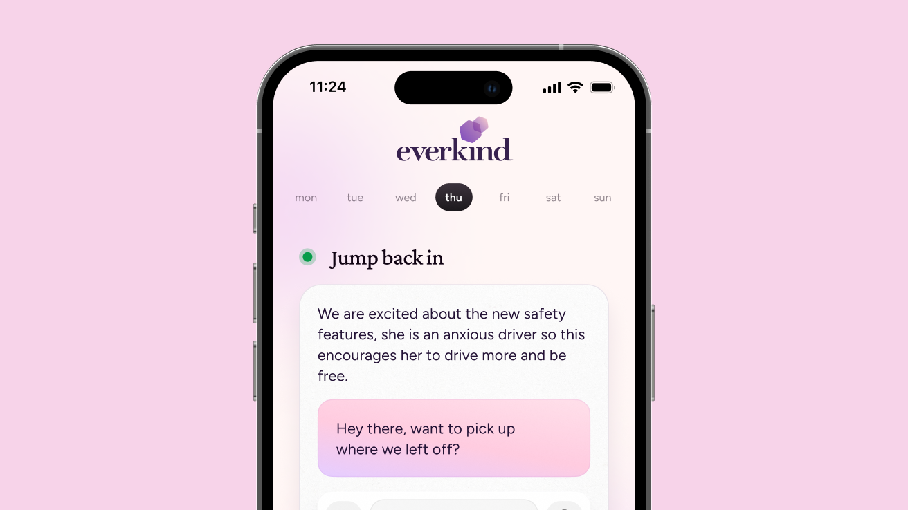

My work
A collection of my work

Everkind
From zero to one: a journaling app and AI companion with 200K+ downloads globally.

Commuter trains for 4000 people
A redesigned view and a increase of 51% in user satisfaction

Rhode Island School of Design
Aligning a 144-Year Legacy with Digital Transformation

Design Labs
Connecting corporate teams through a collaborative AI platform.

University of Mary Washington
Unifying experiences and engaging students

Getting Gen-Z hooked on news
An exploration on how to get younger generations to take control of their news feed

Vista, Quick investments
Investing can be fun and easy

Never run out of milk
Pantrx is a shared grocery app designed for families, roommates, and friend groups.

Georgia Department of Agriculture
Reducing government bureaucracy by going paperless